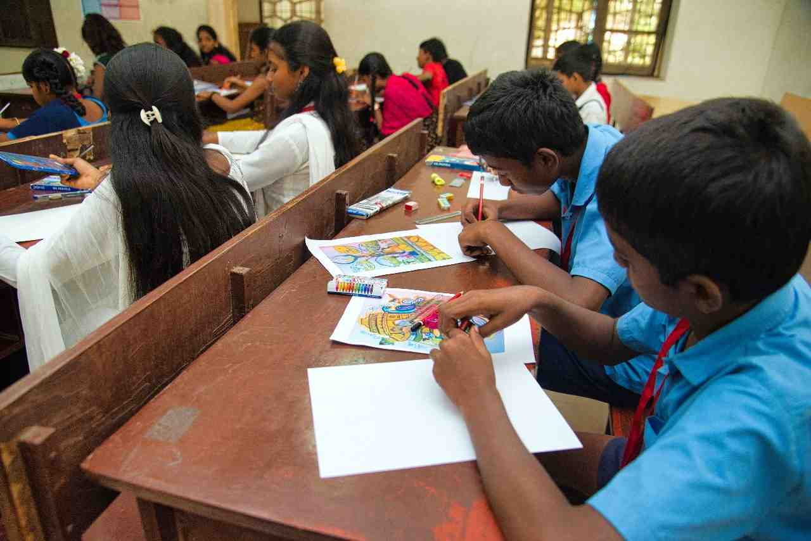
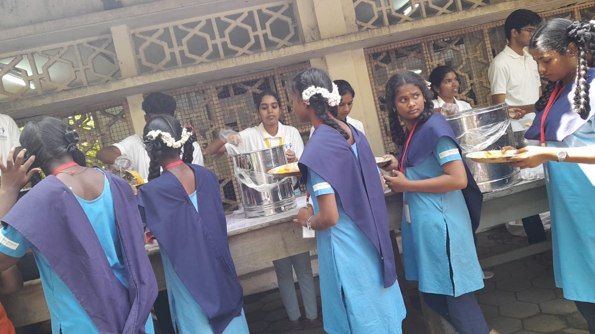
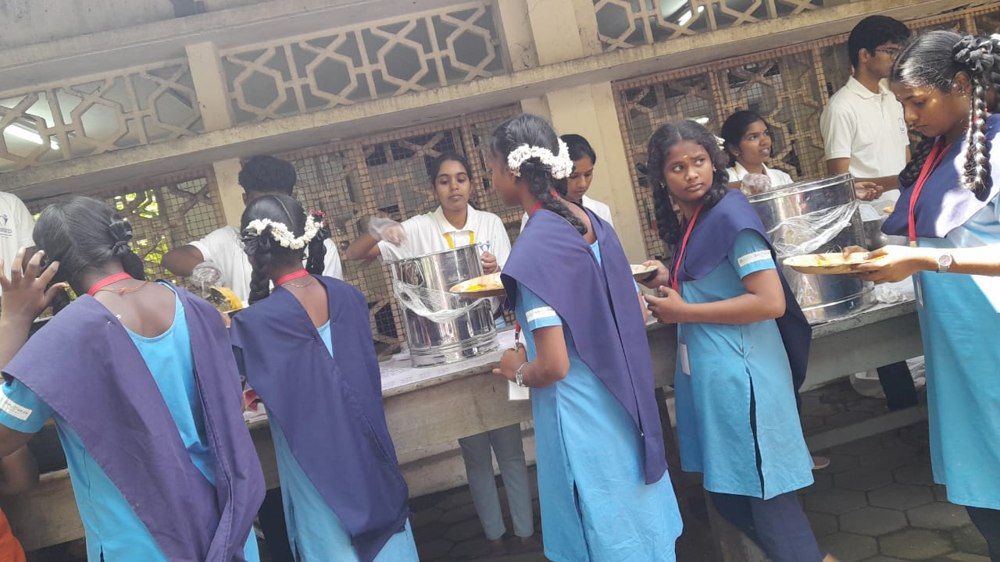
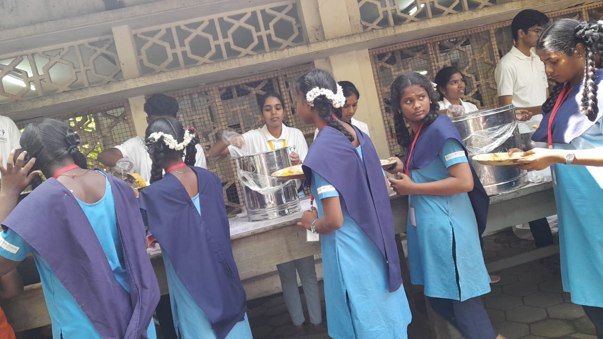

YOUTH RED CROSS
Anna university, Chennai-600025


VIVEGA'25
(For more details view the site in Desktop)
VIVEGA'25 was conducted on 01.02.2025 (Saturday) at the TAG Auditorium. The event was inaugurated by Thiru. Johny Tom Varghese IAS, Director of Children Welfare and Special Services GovtTN, along with Dr. S. Thanigaiarasu, Professor, Department of Aerospace Engineering, MIT Campus, Anna University, in the presence of Dr. D. Narashiman (Programme Officer, Unit-1), Dr. R. Lavanya (Programme Officer, Unit-3), Mr. P. Balaji (CEG Alumni - 2007 Passed Out), Mrs. P. Sundaravalli (CEG Alumni - 2008 Passed Out) and Mr. E. Kuraloviyan (CEG Alumni - 2009 Passed Out) CEG Campus, Anna University.Throughout the day, various competitions were conducted, including Essay Writing, Poetry Writing, Singing, Dancing, Drawing, and Newspaper Dressing. Children from the following 5 Orphanages/Homes participated.

 


- Webb’s Memorial Orphanage, St. Thomas Mount
- Sevalaya, Thiruvanmiyur
- Rainbow Homes, Purasaiwalkam
- Rainbow Homes, Chetpet
- Avvai Home & Orphanage, Adyar
In the evening valedictory function, speeches were delivered to encourage the students and instill a sense of confidence. Finally prizes were distributed to the winners by chief guests Aluminis and stationery items, bags, participation certificates, notebooks were given to the all participants. In addition snacks, lunch and transportation facilities were provided to the participants with the help of sponsors.
Beneficiary: 148 Orphan students from the above 5 Orphanages / Homes in and around Chennai.
Sponsors:
- YRC – CEG Alumni
- Printers Desk
VIVEGA'19
(For more details view the site in Desktop)
VIVEGA’19 was conducted on 06.01.2019 (Sunday). The event was inaugurated by Mr. Ezhilarasan, Founder of Dreams NGO along with Dr.B.Kumar, HOD, Department of Printing Technology, College of Engineering Guindy & YRC Coordinator, Anna University in the presence of Dr.D.Narashiman (Programme Officer, Unit-1) and Dr.V.Gomathi (Programme Officer, Unit-2) at TAG Auditorium, CEG Campus, Anna University. During the day various competitions like Essay Writing, Poetry Writing, Quiz, Singing, Dancing, Debate, Drawing, Art from Waste and Newspaper Dressing were conducted. Children from the following 6 Orphanages / Homes participated.
- New Hope & New Life Charity, Perumbakkam
- Jeevan Roshini Charitable Trust, Kovilampakkam
- Rainbow Homes, Purasaiwalkam
- Rainbow Homes, Chetpet
- Jeevadhanam Trust, Adyar
- Nesakaram Seeds, Nungambakkam
In the evening valedictory function, speeches were delivered to encourage the students and instill a sense of confidence. Finally prizes were distributed to the winners by chief guests Dr.Sujatha Surappa, Dr.Vasanthi Babu, Student Councellor, CEG and Mr.Arjun (Actor) and stationery items, bags, participation certificates, notebooks were given to the all participants. In addition snacks, lunch and transportation facilities were provided to the participants with the help of sponsors.
Beneficiary: 151 Orphan students from the above 6 Orphanages / Homes in and around Chennai.
Sponsors:
- YRC – CEG Alumni
- Alma Group of Companies
- Bbeez
- Sri Chain Granites
- Varanaa Industries
- Sri Sairam Caterers
- Printers Desk
VIVEGA'18
(For more details view the site in Desktop)
VIVEGA’18 was conducted on 07.01.2018 (Sunday). The event was inaugurated by Ms. Shanthi Soundararajan, Track & Field Athlete, along with Dr.B.Kumar, HOD, Dept. of Printing Technology, CEG Campus & YRC Coordinator, Anna University and Mr.D.Narashiman (Programme Officer, Unit- 1) at Ada Lovelace Auditorium, Dept. of Information Science & Technology, CEG Campus, Anna University. During the day various competitions like Essay Writing, Poetry Writing, Quiz, Singing, Dancing, Debate, Drawings, Art from Waste and Paper Dressing were conducted. Children from the following 7 Orphanages / Homes participated.
- Ramakrishna Mission Student’s Home, Mylapore
- Christ Faith Home For Children, Porur
- Nesakaram Seeds, Nungambakkam
- Jeevan Roshini Charitable Trust, Kovilampakkam
- New Hope & New Life Charity, Perumbakkam
- Arul Oli Charitable Trust, Trisulam
- Children’s Home of Hope, Maduravoyal
In the evening valedictory function, speeches were delivered to encourage the students and instill a sense of confidence. Finally prizes were distributed to the winners by chief guest Mr.Theetharappan, Sri Sairam Caterers and stationery items, bags, participation certificates and notebooks were given to the all participants. In addition snacks, lunch and transportation facilities were provided to the participants with the help of sponsors.
Beneficiary: 175 Orphan students from the above 7 Orphanages / Homes in and around Chennai.
Sponsors:
- YRC – CEG Alumni
- Sri Sairam Caterers
- Alma Group of Companies
- Puri Jaganathan Religious Trust
- Idhayam Group of Companies
- Printers Desk
- Narmada Publications
VIVEGA'17
(For more details view the site in Desktop)
VIVEGA’17 was conducted on on 05.02.2017(Sunday). The event was inaugurated by Mr.K.P.Srikumar Menon, Founder and CEO of skillsgrow.com, Dr.K.Ganapathy Subramaniam, Pediatric Cardio Vascular Surgeon along with Mr.D.Narashiman (Programme Officer, Unit-1) at Henry Maudslay Hall, Department of Mechanical Engineering, CEG Campus, Anna University. During the day various competitions like Essay Writing, Poetry Writing, Quiz, Singing, Dancing, Debate, Drawings, Art from Waste and Paper Dressing were conducted. Children from the following 7 Orphanages / Homes participated.

- Jeevanaadi, Kodambakkam
- Jeevanaadi, Vadapalani
- Jeevanaadi, Choolaimedu
- Roshini Home For Children, Sunnambu kolathur
- New Hope & New Life Charity, Medavakkam
- Christ Faith Home For Children, Manapakkam
- Faith Home for Children, Porur
In the evening valedictory function, speeches were delivered to encourage the students and instill a sense of confidence. Finally prizes were distributed to the winners by chief guest Mr.V.Arun Vijay, Actor and stationery items, bags, participation certificates and notebooks were given to the all participants. In addition snacks, lunch and transportation facilities were provided to the participants with the help of sponsors.
Beneficiary: 160 Orphan students from the above 7 Orphanages / Homes in and around Chennai.
Sponsors:
- YRC – CEG Alumni
- Sri Sairam Caterers
- Printers Desk
- Narmada Publications
- SM Fabs
VIVEGA'16
VIVEGA’16 was conducted on 20.03.2016(Sunday). The event was inaugurated by Mr.K.Vipinendran, Associate Professor, Department of Printing Technology, along with Mr.D.Narashiman(Programme Officer Unit-1). During the day various competitions like Essay Writing, Poetry Writing, Quiz, Singing, Dancing, Debate, Drawings, Art from Waste and Paper Dressing were conducted. 130 children from the following 6 homes participated.
- Anaikkum Karangal, Ullagaram
- Avvai Home & Orphanage, Adyar
- Jeevan Roshini Charitable Trust, Kovilambakkam
- Solomon Children Home, Alwarthirunagar
- Thiruvalluvar Gurukulam, Saidapet
- Webb’s Memorial Orphanage, St. Thomas Mount

In the evening valedictory function, speeches are delivered to encourage the students and instill a sense of confidence. Finally prizes are distributed to the winners and stationery items, bags and notebooks are given to the all participants. In addition breakfast, snacks, lunch and transportation facilities are provided to the participants with the help of sponsors.
Beneficiary: 130 Orphan students from the above 6 Orphanages / Homes in and around Chennai.
Sponsors:
Beneficiary: 130 Orphan students from the above 6 Orphanages / Homes in and around Chennai.
Sponsors:
- YRC – CEG Alumni
- Vimmudi Bangaru Jewelers
- Youth Caterers
- Narmada Publications
- Maxican